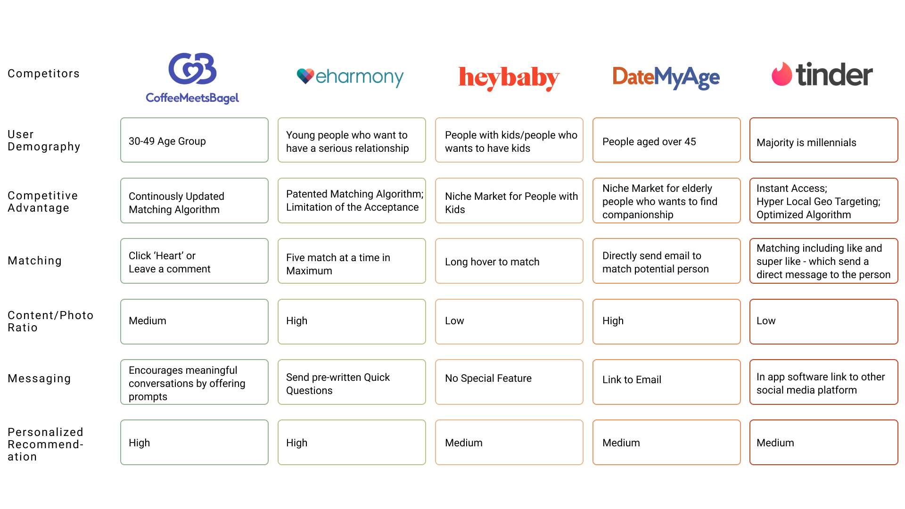
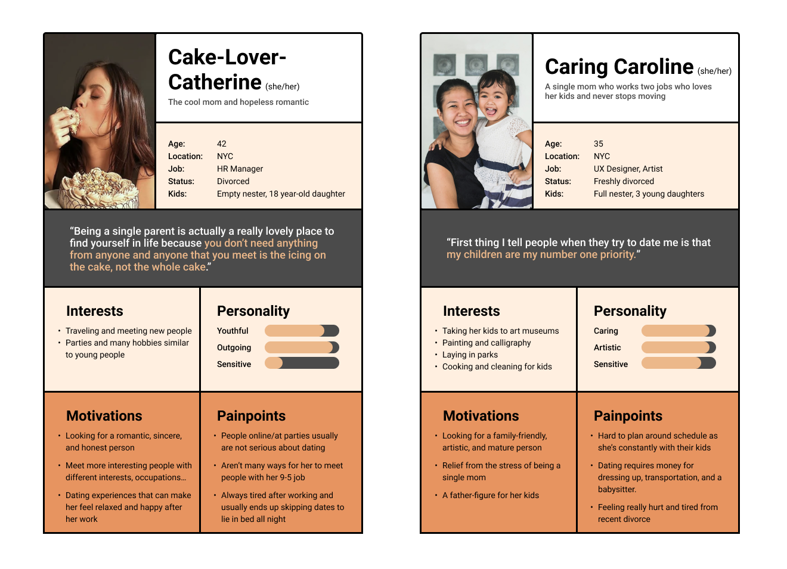
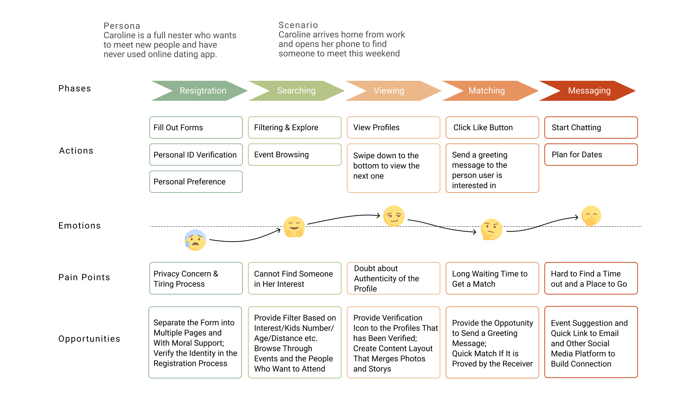
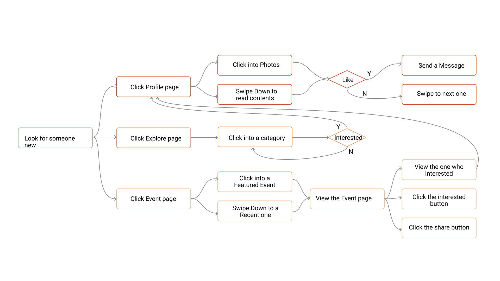
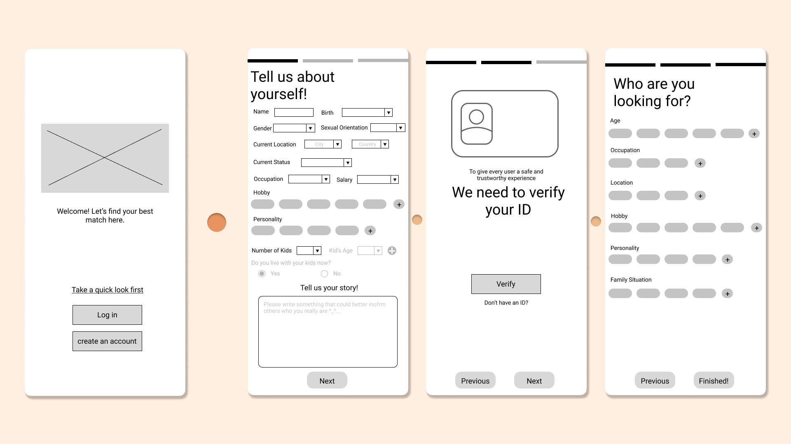
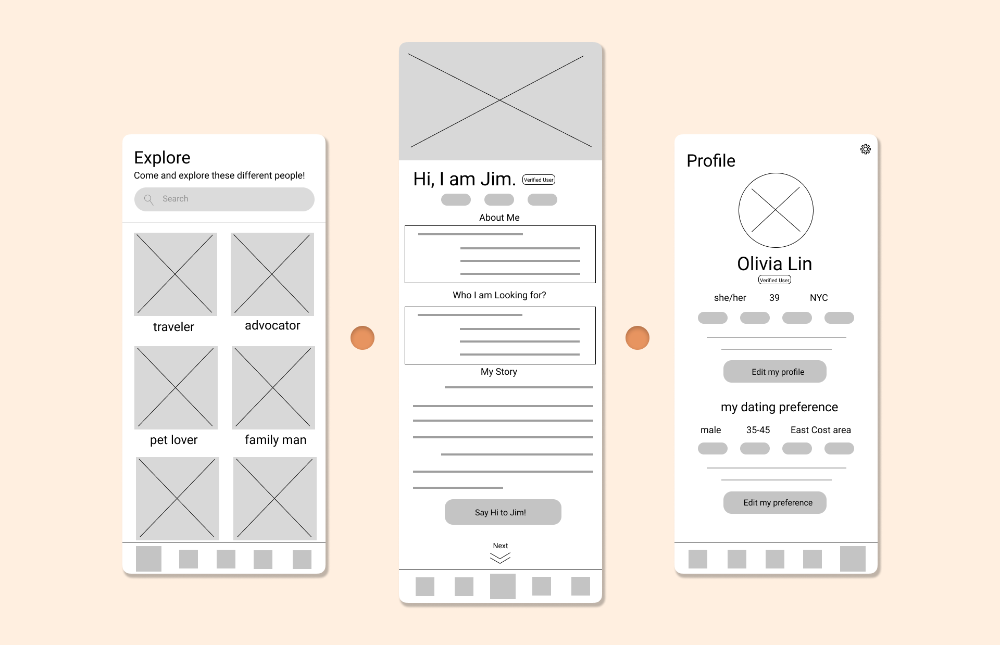
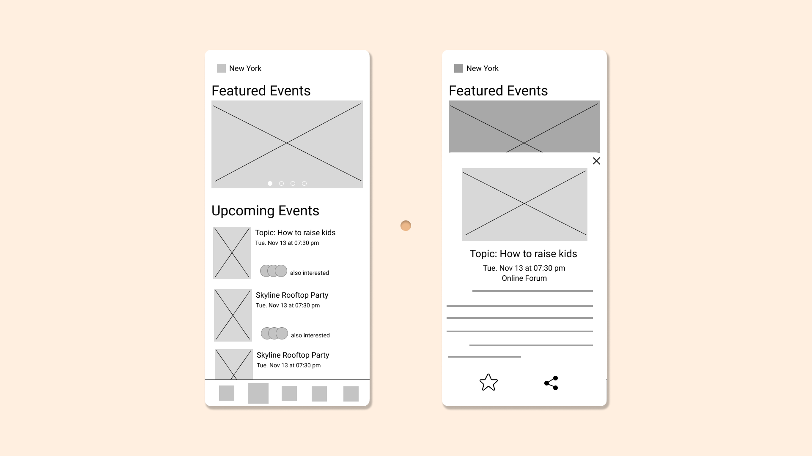
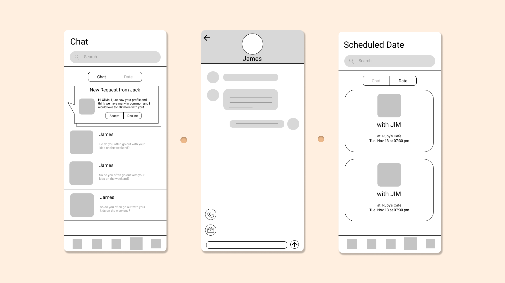

Reunion
Brief
Reunion is a concept for an app designed to help single parents
find people to date in a relaxing, convenient, and safe way.
Category
User Experience
Team Project
Role
User Research, Personas, Wireframes
Problem
Finding a perfect match to date is tough as it is, but
finding time to meet available and interesting people as a
single parent is nearly impossible. Moreover, for single parents, they date with
more concerns than the younger population, thinking of their kids, busy work, and
more.
User Needs
For single parents
who are looking to date living in cities,
our product Reunion is a dating app that
helps them find available and interesting people to meet and date. Unlike quick-spaced
apps such as Tinder or Hinge, our product takes into account the tight
schedules and priorities that come with being a single parent.
Project Objectives
- Increase efficiency and accessibility
of older adults using app to date.
- Enhance the seriousness and
reliability of online dating for single parents.
- Value: Safety, Responsibility, Care, Trust.
Competitive Analysis

User Research
Research Goal
- Better understand the concerns of single parents when they date
- Find out what differs the single parents group from other groups of
people that use dating apps
- Understand their standards for creating a new family and dating others
- Understand their expectations for a dating app
Methodology
- Survey (quantitive + qualitative questions)
- Interview
Insights
Painpoints
- Nervous to start dating again
- Having no idea how dating app would work and whether it is safe to use them
- Feeling awkward and uncomfortable in some dating situations
- Hard to find one that would be suitable for a deeper relationship after dating
- Data authenticity
- Fear of meeting someone who is not serious towards relationship
"Jobs-To-Be-Done"
- Provide a relaxing matching/fating experience
- Build trust in the relationship
- Help users get used to online dating environment
- Reduce the concern about personal security
- Release their stress of having the identity as single parents
Personas

Journey Map

User Flow

Wireframes
Landing Page · Onbarding

- Three information filling sections for regestration:
Information, ID Verification , and
Dating Preferences.
Explore · Matched User · Profile

- Explore page allows
the user to view different people's profiles based on different categoris such
as various hobbies and different locations.
- Matched User page is the default page shown to
the user after the login. It is a full page showing all the information and personal story
of the person matched by the system to the user. At the end of the page, the user, after reading
all the information, could either send a Say-Hi massage to that person or scorll to the next
person matched.
- Profile page is where the user could
change personal information and dating preferences.
Event

- Event page will show
different events held near the user where the user will meet new people.
Different kinds of events are offered so that the user could choose which one
he or she feels most comfortable and willing to participate.
- Clicking on a specific event would pop up the modal screen showing the
details about the event. The user could favorite it or share the event with others.
Chat & Date

- Chat function allows the user to have more conversations
with the ones he or she is interested and wants to know more. The chat could only start when
both sides are willing to know each other more. Therefore, when one user send a hello mesage
to another user, there will be a text box showing the request from that user and the user
received the request could either accept it or decline it.
- To make things easier, the user could directly make a phone call or
send a dating invitation to the other specifying details like location and time.
- Date page will list all the coming dates
the user has scheduled with others as a quick reminder.
Feedback & Future Improvement
- Registraion pages are too overwhelming. The process should be further divided
into different pages.
- Event page should be better utilized and more ineractive.
- Possible preview browsing opportunity before registration should be given to get potential users onboard.
- The experience could be overwhelming if the user is receiving too many requests from others.
One possible solution could be to reduce amount of requests for the user by reserving
good matches.
- The networking among users should be carefully considered. For example, since the users
can see who else is also attending an event, how users might feel if they have
multiple matches show up to the same event? This could potentially lead to a negative
and/or awkward experience if it's not handled with care.